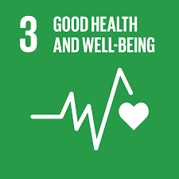

History
The 2030 Agenda for Sustainable Development adopted by all United Nations Member States in 2015, provides a shared blueprint for peace and prosperity for people and the planet, now and into the future. At its heart are the 17 Sustainable Development Goals (SDGs), which are an urgent call for action by all countries - developed and developing - in a global partnership. They recognize that ending poverty and other deprivations must go hand-in-hand with strategies that improve health and education, reduce inequality, and spur economic growth – all while tackling climate change and working to preserve our oceans and forests.
The SDGs build on decades of work by countries and the UN, including the UN Department of Economic and Social Affairs
Today, the Division for Sustainable Development Goals (DSDG) in the United Nations Department of Economic and Social Affairs (UNDESA) provides substantive support and capacity-building for the SDGs and their related thematic issues, including water, energy, climate, oceans, urbanization, transport, science and technology, the Global Sustainable Development Report (GSDR), partnerships and Small Island Developing States. DSDG plays a key role in the evaluation of UN systemwide implementation of the 2030 Agenda and on advocacy and outreach activities relating to the SDGs. In order to make the 2030 Agenda a reality, broad ownership of the SDGs must translate into a strong commitment by all stakeholders to implement the global goals. DSDG aims to help facilitate this engagement.

More than 700 million people still live in extreme poverty, surviving on less than $1.90 per day. Poverty is not just a lack of income, it also includes lack of access to basic services such as healthcare, education, and safe drinking water, as well as discrimination and social exclusion.

Hunger and malnutrition are still major challenges globally, with over 690 million people suffering from hunger, and 2 billion people lacking access to safe, nutritious, and sufficient food. Achieving zero hunger requires addressing the root causes of hunger, such as poverty, inequality, conflicts, and climate change, and promoting sustainable agriculture practices, investment in rural infrastructure, and social protection programs.

Good health and wellbeing is not just the absence of disease, but also the state of complete physical, mental, and social well-being. Achieving this goal requires addressing the social determinants of health, such as poverty, education, and gender inequality, as well as improving access to quality health care, promoting healthy lifestyles, and strengthening health systems.
Quality education is a fundamental human right and an essential tool for sustainable development. Achieving this goal requires addressing the barriers to education, promoting equal access to education for all, and ensuring that education is relevant and of high quality.

Gender equality refers to the equal rights, opportunities, and treatment of all genders, regardless of their gender identity or expression. Achieving gender equality requires addressing the systemic discrimination and unequal power relations that underpin gender-based inequalities.

Clean water and sanitation is essential for human health, well-being, and economic development. However, over 2 billion people still lack access to safe drinking water and basic sanitation facilities.
Affordable and Clean Energy" is one of the United Nations' Sustainable Development Goals (SDGs) adopted in 2015, which aims to ensure access to affordable, reliable, sustainable, and modern energy for all by 2030, while also promoting the transition to clean energy sources to reduce greenhouse gas emissions and mitigate the impacts of climate change.
Achieving decent work and economic growth is essential for reducing poverty, promoting social inclusion, and building resilient economies that can withstand shocks and crises. It requires the collective effort and commitment of all stakeholders to promote sustainable economic growth, ensure that all workers have access to decent work and social protections, and create an enabling environment for entrepreneurship and innovation.
To achieve the SDG of industry, innovation, and infrastructure, governments, civil society, and private sector actors must work together to address the complex and interconnected issues related to industrialization, innovation, and infrastructure development
"Reduced Inequality" is one of the United Nations' Sustainable Development Goals (SDGs) adopted in 2015, which aims to reduce income inequality within and among countries, promote social, economic, and political inclusion, and ensure equal opportunities for all.
To achieve the SDG of sustainable cities and communities, governments, civil society, and private sector actors must work together to address the complex and interconnected issues related to urbanization
"Responsible Consumption and Production" is one of the United Nations' Sustainable Development Goals (SDGs) adopted in 2015, which aims to promote sustainable consumption and production patterns that reduce waste and pollution, promote resource efficiency, and support sustainable economic growth.
Climate Action" is one of the United Nations' Sustainable Development Goals (SDGs) adopted in 2015, which aims to take urgent action to combat climate change and its impacts. This goal recognizes the importance of addressing the global climate crisis and its potential impact on all aspects of sustainable development.

"Life Below Water" is one of the United Nations' Sustainable Development Goals (SDGs) adopted in 2015, which aims to conserve and sustainably use the oceans, seas, and marine resources for sustainable development.

Life on Land" is one of the United Nations' Sustainable Development Goals (SDGs) adopted in 2015, which aims to protect, restore, and promote the sustainable use of terrestrial ecosystems, sustainably manage forests, combat desertification, and halt biodiversity loss.
Peacekeeping by the United Nations is a role held by the Department of Peace Operations as an "instrument developed by the organization as a way to help countries torn by conflict to create the conditions for lasting peace".It is distinguished from peacebuilding, peacemaking, and peace enforcement although the United Nations does acknowledge that all activities are "mutually reinforcing" and that overlap between them is frequent in practice.
The Global Goals can only be met if we work together.International investments and support is needed to ensure innovative technological development, fair trade and market access, especially for developing countries. To build a better world, we need to be supportive, empathetic, inventive, passionate, and above all, cooperative.